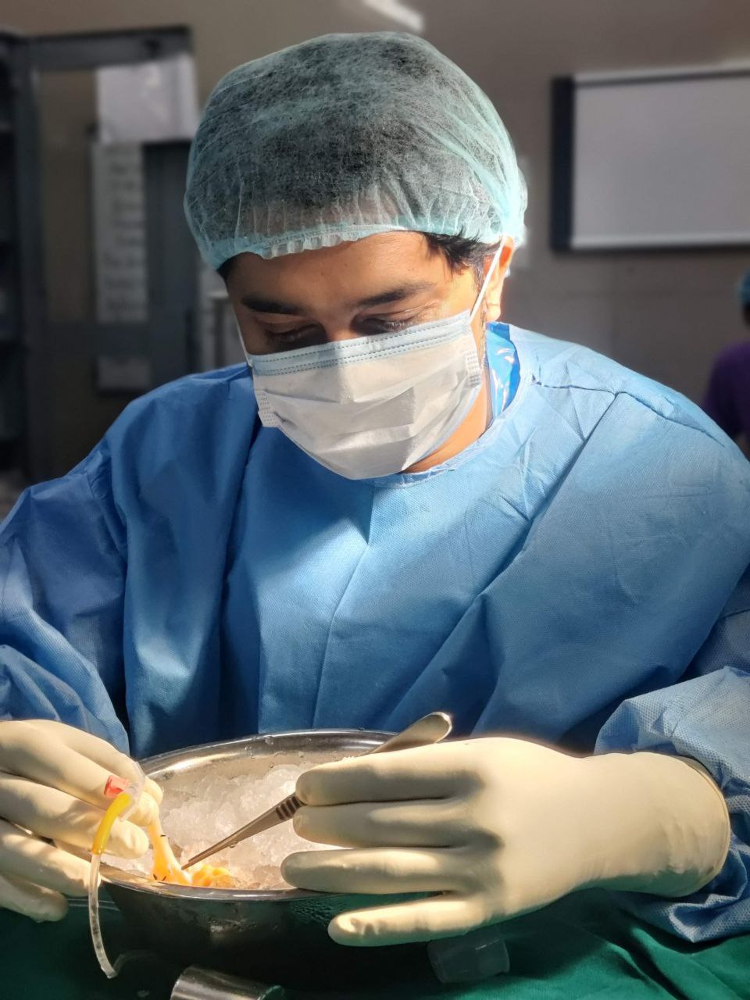

Expert Urology, Andrology, Laparoscopic & Renal Transplant Care in Raichur
Appointments: +91 7892910925Fadnis Urology Clinic delivers advanced urology, andrology, laparoscopic and renal care with precision, compassion, and patient-first treatment.

7+ Years Experience
Dr. Akshay Fadnis is a board certified urologist, andrologist, laparoscopic surgeon and renal transplant surgeon with specialized training in endo-urology. He is known for combining strong clinical judgment with patient-friendly communication and a focused approach to long-term recovery.
With experience in managing both general surgical and urological conditions, he offers treatment through open, endoscopic and laparoscopic techniques based on the specific needs of each patient.
Detailed consultation, careful evaluation and treatment decisions centered around patient safety and comfort.
Use of modern open, endoscopic and laparoscopic methods for better precision and recovery planning.
A strong academic foundation and specialized training from leading medical institutions shape the quality of care delivered at the clinic.
Completed from Mysore Medical College.
Completed from Dr. RML Hospital, Delhi.
Completed from the Institute of Nephro-Urology, Bangalore, with specialized training in advanced urological care and endo-urology.
Dr. Akshay Fadnis manages a broad range of urological and andrological conditions with a balance of surgical skill and evidence-based treatment planning.
Evaluation and treatment of simple to complex urinary stone disease using modern endoscopic and surgical techniques.
Management of enlarged prostate and lower urinary tract symptoms with individualized treatment options.
Focused care for pediatric urological concerns with special attention to comfort, clarity and family support.
Comprehensive evaluation and treatment for bladder-related issues affecting daily comfort and quality of life.
Care for male infertility, sexual dysfunction, hydrocele and varicocele with privacy and personalized guidance.
Treatment support for fistula care, renal transplant surgery and testicular cancers using structured surgical planning.
Our treatment philosophy is built around diagnosis, precision and trust, ensuring every patient feels informed and supported.
Care begins with understanding symptoms, medical history and the exact condition through proper assessment.
Patients receive an understandable explanation of the issue, treatment choices and expected next steps.
Open, endoscopic or laparoscopic methods are selected based on clinical need, recovery and outcomes.
Post-treatment guidance is designed to help patients recover confidently and maintain long-term health.
We combine expertise, technology and compassionate care to support better outcomes and better patient experience.
Comprehensive care in urology, andrology, laparoscopic urology and renal transplant-related treatment support.
Preference for modern endoscopic and laparoscopic techniques wherever clinically suitable for precision and recovery.
Warm communication, ethical treatment planning and long-term guidance tailored to each patient’s needs.
Get expert consultation and advanced treatment for all urological conditions.
Book Your Consultation